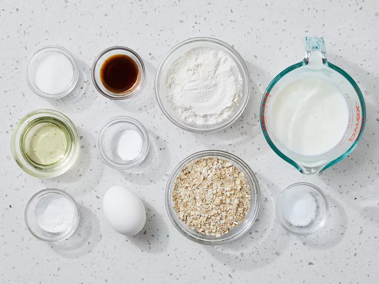
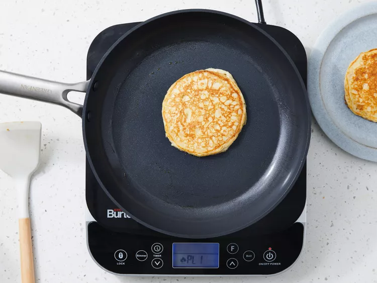

Oatmeal Pancake
Home
Description
I make these oatmeal pancakes for my kids. The recipe is so simple — the batter with oats and buttermilk is prepared in a food processor or blender, so it's ready to cook in minutes. Serve with syrup and butter or a dollop of applesauce.
Ingredients
- ¾ cup buttermilk
- ½ cup all-purpose flour
- ½ cup quick cooking oats
- 1 large egg
- 2 tablespoons vegetable oil
- 1 tablespoon white sugar
- 1 teaspoon vanilla extract
- 1 teaspoon baking powder
- ½ teaspoon baking soda
- ½ teaspoon salt
Directions
-
Gather all ingredients.
 -
Combine buttermilk, flour, oats, egg, oil, sugar, vanilla, baking powder, baking soda, and salt in a blender; purée until smooth.

-
Heat a lightly oiled griddle or large skillet over medium-high heat. Pour 1/4 cupfuls batter onto the hot griddle. Cook until bubbles form on the surface, 1 to 2 minutes. Flip and cook until browned on the other side, 1 to 2 minutes more.
 -
Serve immediately.